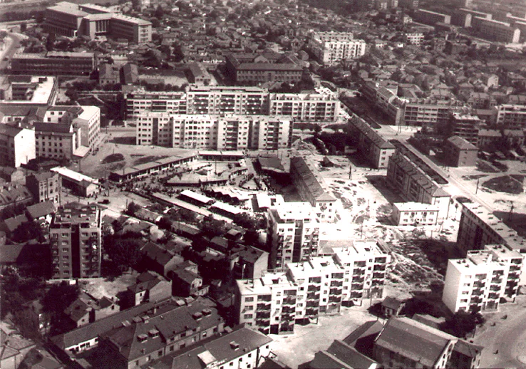

Meydan
- Senaryo
- Dimitrie Osmanli, Simon Drakul
- Kamera
- Kiro Bilbilovski
- Yıl
- 1964
- Süre
- 00:06

Sağda Saat Kulesi, solda Gazi İsa Bey Camii ve "Saat Kulesi" mahallesiyle şehrin görünümü. (1940'lar)

Bugünkü "Grand" oteli yanındaki Beton Köprü. Arka planda Üsküp Kalesi görülüyor. (1950'ler)

Üsküp panoraması. (1950'ler)

Üsküp panoraması. Ön planda Beton Köprü (bugünkü Grand otel yanında), arka planda Taş Köprü, Subaylar Evi ve Milli Banka. Sağ üstte Üsküp Kalesi. Rıhtım, aralarında yeşillik bulunan bir gezinti yolu ve bir yol olarak düzenlenmiş. (1950'ler)

Beton Köprü'ye bakış (bugünkü Grand otel yanında). Ön planda Pajko mahallesi. Arka planda Üsküp Kalesi, sağında Mustafa Paşa Camii. (1950'ler)

Üsküp, 1950'ler, yeni konut binalarıyla. Ortada bugünkü Yeşil Pazar'ın yeri var.

Üsküp şehir panoraması. Ön planda Özgürlük Meydanı. Vardar'a doğru uzanan cadde "Vasil Glavinov". Meydanın ilk köşesinde "Goce Delčev" ilkokulunun girişi. - 1950'ler

"Sloboda" (Özgürlük) Meydanı. Arka planda Subaylar Evi ve Milli Banka görülüyor. - 1950'ler

Depremden önce Üsküp merkezi - 1960 civarı.

Üsküp merkezinin panoramik havadan çekimi. Subaylar Evi, Milli Banka ve Ticaret Odası ile meydan. Sağda merkez postanesi, sol altta Milli Tiyatro'nun çatısı. Fotoğraf 1950'lerde çekildi.

Üsküp'ün merkez bölgesinin panoramik fotoğrafı - 1950'ler

Depremden önce şehir merkezinin havadan çekimi - 1963. Kulelerin arasında (sağ üstte), bugün alışveriş merkezinin olduğu yerde "Çar Konstantin ve Çariçe Elena" kilisesi var.

Eski Üsküp çarşısının bir bölümünün panoraması, 1950'ler.

Bit Pazarı'nın ve eski çarşının bir bölümü. Üstlerinde Mustafa Paşa Camii görülüyor. (1950'ler)

Üsküp merkezinin görünümü. Taş Köprü hâlâ trafiğe açık. Fotoğraf 26 Temmuz 1963'teki yıkıcı depremden kısa süre sonra çekildi.

1968'de Üsküp. Bugünkü şehir alışveriş merkezinin yeri.

Şehir merkezinin panoramik fotoğrafı. Meydan hâlâ motorlu taşıtlar için otopark olarak kullanılıyor.
(1960'lar)

Üsküp Kalesi'nden fotoğraflanan, düzenlenmiş Vardar ile şehrin merkez kısmının panoraması. (1970'ler). Ön planda Taş Köprü, büyük mağaza, "Pelister" ve diğer binalar.

Üsküp Kalesi'nden şehir merkezine bakış. Vardar'ın sağ kıyısındaki gezinti yolu insanlarla dolu. (1970'ler)

Üsküp Kalesi'nden şehir merkezine bakış. (1970'ler)

Taş Köprü'nün hemen yanında Vardar'ın sol kıyısının görünümü. Fotoğrafın alt kısmında Aziz Dimitri kilisesinin bir bölümü var. (1970'ler)

Taş Köprü'nün hemen yanında Vardar'ın sol kıyısının görünümü. Fotoğrafın alt kısmında Aziz Dimitri kilisesinin bir bölümü var. (1980'ler)

Üsküp panoraması. Ön planda küçük "Savaşçı Kadın" parkı. Altta solda Şehir Hastanesi binasının ve Meclis binasının bir bölümü görülüyor. - 1980'ler.

Şehir Alışveriş Merkezi ve Üsküp'ün konut ve kamu binalarıyla "Savaşçı Kadın" parkı. - 1980'ler.

Ön planda üst geçitle "Goce Delčev" bulvarı ve köprüsü. Arka planda Telekomünikasyon Merkezi ve "Gradski Zid" konut kompleksinin bir bölümü. (1980'ler)

Şehir merkezine bakış. Ön planda bazı bankalar, "Revolucija" köprüsü ve tiyatro. Arka planda Beton Köprü, Taş Köprü ve Telekomünikasyon Merkezi - 1980'ler.

Bugünkü Maliye Enstitüsü'nün çatısından şehir merkezine bakış. Uzakta Taş Köprü. Kartpostalın sağında bugünkü tiyatro, üzerinde Üsküp Kalesi seçiliyor - 1980'ler.

1970'lerin sonunda Üsküp. Bugünkü "Grand" oteli yanındaki köprü. Solda Makedon Radyo Televizyonu binası, sağda bugünkü Ödeme İşlemleri Enstitüsü binası yükseliyor.

Vodno dağının yamacından Üsküp panoraması. Ön planda "Panorama" oteli var. (1980'ler)

Vodno dağının yamaçlarından gece Üsküp panoraması. (1980'ler)

 Su kemeri4 kartpostal
Su kemeri4 kartpostal Kale30 kartpostal
Kale30 kartpostal Köprüler60 kartpostal
Köprüler60 kartpostal Rıhtım58 kartpostal
Rıhtım58 kartpostal Meydan46 kartpostal
Meydan46 kartpostal Binalar66 kartpostal
Binalar66 kartpostal Hristiyan kiliseleri19 kartpostal
Hristiyan kiliseleri19 kartpostal İslami yapılar33 kartpostal
İslami yapılar33 kartpostal Subaylar Evi29 kartpostal
Subaylar Evi29 kartpostal Tiyatro28 kartpostal
Tiyatro28 kartpostal Tren garı13 kartpostal
Tren garı13 kartpostal Okullar36 kartpostal
Okullar36 kartpostal Parklar12 kartpostal
Parklar12 kartpostal Pazarlar18 kartpostal
Pazarlar18 kartpostal Sokaklar38 kartpostal
Sokaklar38 kartpostal Panorama I60 kartpostal
Panorama I60 kartpostal Panorama II30 kartpostal
Panorama II30 kartpostal Kolajlar55 kartpostal
Kolajlar55 kartpostal Seller9 kartpostal
Seller9 kartpostal Deprem27 kartpostal
Deprem27 kartpostal Üsküp 200026 kartpostal
Üsküp 200026 kartpostal